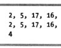
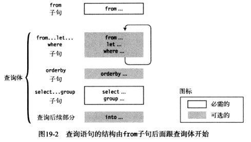
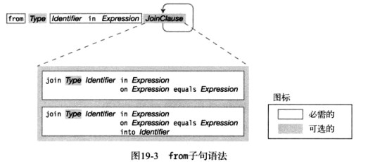
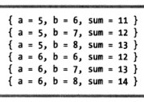
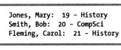
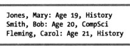
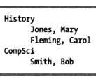

var student = new { Age = 19, Other.Name, Major };
例：使用三种初始化语句。
classOther { staticpublicstring Name = "Mary Jones"; }
classProgram { staticvoidMain() { string Major = "History"; var student = { Age = 19, Other.Name, Major }; // 赋值形式、成员访问、标识符 Console.WriteLine("{0}, Age {1}, Major: {2}", student.Name, student.Age, student.Major); // Mary Jones, Age 19, Major: History } }
classProgram { staticvoidMain() { int[] numbers = { 2, 5, 28, 31, 17, 16, 42 }; var numsQuery = from n in numbers // 查询语法 where n < 20 select n; var numsMethod = numbers.Where(x => x < 20); // 方法语法 int numsCount = (from n in numbers // 两种形式组合 where n < 20 select n).Count(); foreach (var x in numsQuery) { Console.Write("{0}, ", x); } Console.WriteLine(); foreach (var x in numsMethod) { Console.Write("{0}, ", x); } Console.WriteLine(numsCount); } }
输出结果：

查询变量
LINQ查询可以返回两种类型的结果：
一个枚举（可枚举的一组数据，不是枚举类型），它满足查询参数的列表。
一个叫做标量（scalar）的单一值，它是满足查询条件的结果的某种摘要形式。
例：查询变量示例。
classProgram { staticvoidMain() { int[] numbers = { 2, 5, 28 }; IEnumerable<int> lowNums = from n in numbers // 返回枚举数 where n < 20 select n; int numsCount = (from n in numbers // 返回一个整数 where n < 20 select n).Count(); } }
numbers和numsCount叫做查询变量。
查询表达式的结构
查询表达式由查询体后的from子句组成。
子句必须按照一定顺序出现。
from子句和select…group子句是必需的。
LINQ查询表达式中，select子句在表达式最后。
可以有任何多的from…let…where子句。

from子句
from子句指定了要作为数据源使用的数据集合。它还引入了迭代变量。
from Type Item in Items

其中，类型说明符Type是可以省略的。可以有任意多个join子句。
join子句
LINQ中的join接收两个集合然后创建一个新的集合，每一个元素包含两个原始集合中的原始成员。
例：联结示例。
classProgram { publicclassStudent { publicint StID; publicstring LastName; } publicclassCourseStudent { publicstring CourseName; publicint StID; } static Student[] students = new Student[] { new Student { StID = 1, LastName = "Carson" }, new Student { StID = 2, LastName = "Klassen" }, new Student { StID = 3, LastName = "Fleming" } }; static CourseStudent[] studentsInCourses = new CourseStudent[] { new CourseStudent { CourseName = "Art", StID = 1 }, new CourseStudent { CourseName = "Art", StID = 2 }, new CourseStudent { CourseName = "History", StID = 1 }, new CourseStudent { CourseName = "History", StID = 3 }, new CourseStudent { CourseName = "Physics", StID = 3 } } staticvoidMain() { var query = from s in students join c in studentsInCourses on s.StID equals c.STID where c.CourseName == "History" select.LastName; foreach (var q in query) { Console.WriteLine("Student taking History:{0}", q); } } }
classProgram { staticvoidMain() { var groupA = new[] { 3, 4, 5, 6 }; var groupA = new[] { 6, 7, 8, 9 }; var someInts = from a in groupA // 两个from子句 from b in groupB where a > 4 && b <= 8 selectnew { a, b, sum = a + b }; //匿名类型对象 foreach (var a in someInts) { Console.WriteLine(a); } } }
输出结果：

let子句
let子句接受一个表达式的运算并且把它赋值给一个需要在其他运算中使用的标识符。
例：let子句示例。
classProgram { staticvoidMain() { var groupA = new[] { 3, 4, 5, 6 }; var groupA = new[] { 6, 7, 8, 9 }; var someInts = from a in groupA from b in groupB let sum = a + b //在新的变量中保存结果 where sum == 12 selectnew { a, b, sum }; foreach (var a in someInts) { Console.WriteLine(a); } } }
classProgram { staticvoidMain() { var groupA = new[] { 3, 4, 5, 6 }; var groupA = new[] { 6, 7, 8, 9 }; var someInts = from a in groupA from b in groupB let sum = a + b where sum >= 11// 条件1 where a == 4// 条件2 selectnew { a, b, sum }; foreach (var a in someInts) { Console.WriteLine(a); } } }
classProgram { staticvoidMain() { var students = new[] { new { LName = "Jones", FName = "Mary", Age = 19, Major = "History" }, new { LName = "Smith", FName = "Bob", Age = 20, Major = "CompSci" }, new { LName = "Fleming", FName = "Carol", Age = 21, Major = "History" } }; var query = from student in students orderby student.Age select student; foreach (var s in query) { Console.WriteLine("{0}, {1}: {2} - {3}", s.LName, s.FName, s.Age, s.Major); } } }
输出结果：

select…group子句
select子句指定所选对象的哪部分应该被select。可以指定下面任意一项：
整个数据项
数据项的一个字段
数据项的几个字段组成的新对象
group…by子句是可选的。
例：select整个数据项。
using System; using System.Linq; classProgram { staticvoidMain() { var students = new[] { new { LName = "Jones", FName = "Mary", Age = 19, Major = "History" }, new { LName = "Smith", FName = "Bob", Age = 20, Major = "CompSci" }, new { LName = "Fleming", FName = "Carol", Age = 21, Major = "History" }, }; var query = from s in students select s; foreach (var s in query) { Console.WriteLine("{0}, {1}: {2} , {3}", s.LName, s.FName, s.Age, s.Major); } } }
输出结果：

查询中的匿名类型
查询结果可以由原始集合的项、项的某些字段或匿名类型组成。
例：使用select创建一个匿名类型。
using System; using System.Linq; classProgram { staticvoidMain() { var students = new[] { new { LName = "Jones", FName = "Mary", Age = 19, Major = "History" }, new { LName = "Smith", FName = "Bob", Age = 20, Major = "CompSci" }, new { LName = "Fleming", FName = "Carol", Age = 21, Major = "History" }, }; var query = from s in students selectnew { s.LName, s.FName, s.Major }; foreach (var s in query) { Console.WriteLine("{0} {1} -- {2} , {3}", s.FName, s.LName, s.Major); } } }
输出结果：
gourp子句
group子句把select的对象根据一些标准进行分组。
例：根据课程进行分组。
using System; using System.Linq; classProgram { staticvoidMain() { var students = new[] { new { LName = "Jones", FName = "Mary", Age = 19, Major = "History" }, new { LName = "Smith", FName = "Bob", Age = 20, Major = "CompSci" }, new { LName = "Fleming", FName = "Carol", Age = 21, Major = "History" }, }; var query = from s in students group s by s.Major; foreach (var s in query) { Console.WriteLine("{0}", s.Key); foreach (var t in s) { Console.WriteLine(" {0},{1}", t.LName, t.FName); } } } }
输出结果：

查询延续：into子句
查询延续子句可以接受查询的一部分结果并赋予一个名字，从而可以在查询的另一部分中使用。
例：连接groupA和groupB并命名为groupAandB。
classProgram { staticvoidMain() { var groupA = new[] { 3, 4, 5, 6 }; var groupA = new[] { 6, 7, 8, 9 }; var someInts = from a in groupA join b in groupB on a equals b into groupAandB from c in groupAandB select c; foreach (var a in someInts) { Console.WriteLine(a); // 6 } } }